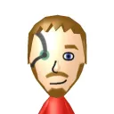

Stewbot is a verified Discord bot designed to keep servers fun and engaging while also providing moderators the tools to keep things clean and safe. The bot has tons of features and more are still being added. The bot is completely free. This bot was previously known as Kestron-Tron, and I started it shortly after becoming a moderator to automate some actions. Today the bot has grown, and is even officially verified by Discord! You can find it on the App Directory here.

Originally known as Kestrogle, Sleuth is a search engine not unlike Searx that acts as a proxy between you and the biggest search engines, keeping your queries unassociated with you as well as providing you better results by sorting them based on relevancy to all three.

MiiJS is an NPM package I developed by reverse engineering Mii files from both a Wii and a 3DS, which shares a format with the Wii U. This package allows you to read, write, edit, create, and convert Miis to and from the Wii and 3DS/Wii U, including support for Special Miis.

AllAboutMii is a Discord bot that is a fully functional Wii Mii editor using MiiJS. It features just as much (in some cases, more) control as the real editor, and exports to both 3DS QRs and Wii bin files. The bot is currently inactive, however you can run it locally.